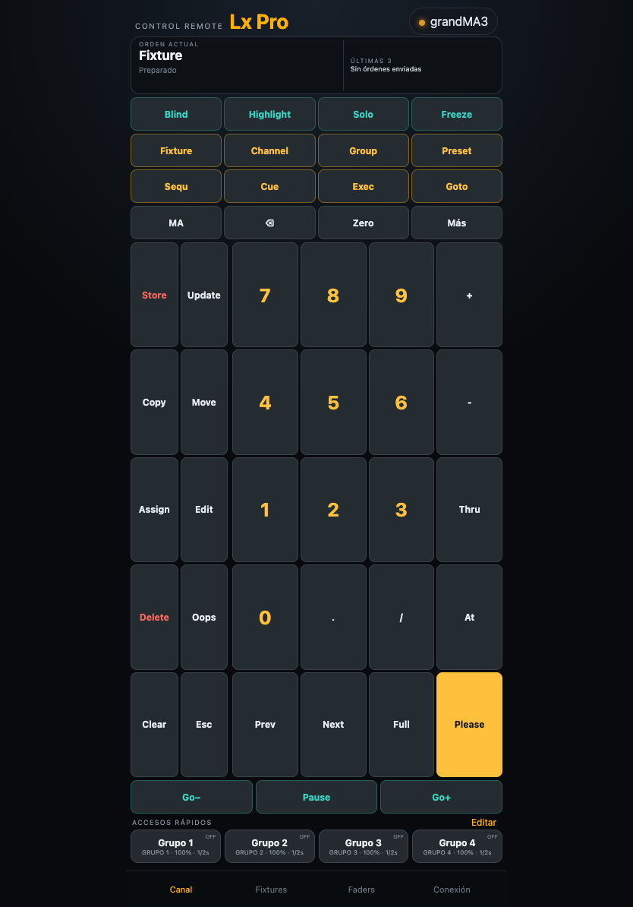

Conectar la app y la mesa
- Conecta el móvil y la mesa o el ordenador con grandMA3 onPC a una red accesible entre ambos.
- En Pro L abre Conexión → Básico, crea o elige un perfil, selecciona OSC y el perfil grandMA3. Escribe la IP de la mesa o del ordenador.
- En Conexión → Avanzado → Puerto OSC del receptor, indica el puerto UDP de entrada de grandMA3. El perfil propone 8000.
- En grandMA3 abre Menu → In & Out → OSC, selecciona la interfaz de red correcta y activa Enable Input. En la línea de entrada elige UDP, el mismo puerto de la app, Receive y Receive Command.
- Si la línea tiene prefijo, cópialo en Prefijo OSC de la mesa (sin barras) en Pro L. Comprueba la selección y envía una orden de prueba sobre un fixture conocido.
Las opciones de entrada, salida, interfaz, prefijo y puerto se configuran en el menú OSC de grandMA3. Consulta la documentación de la versión de mesa que utilizas. Manual oficial de OSC de grandMA3.
Usar el teclado OSC sin plugin
En Canal, las teclas de objetos y programación preparan la orden que muestra ORDEN ACTUAL. Por ejemplo, pulsa Fixture → 1 → At → 5 → 0 → Please para solicitar el 50 % del fixture 1. Please envía el borrador a la mesa.
Clear, Next, Prev y las teclas de modo ejecutan su acción directamente. Full y Zero envían el nivel correspondiente. Esc borra el borrador de la app. MA aplica el atajo a la siguiente tecla. En Más puedes editar la orden y acceder a otras funciones.
Los botones inferiores Go−, Pause y Go+ actúan sobre el ejecutor seleccionado en la mesa. Comprueba el efecto y los modos activos en grandMA3 antes de continuar.

Controlar Fixtures
- Abre Fixtures y elige Selección de la mesa / teclado, Fixtures manuales o Grupo de la mesa. La primera opción actúa sobre la selección vigente en grandMA3. En manual escribe los Fixture IDs, como
1 + 3 Thru 8. Para un grupo introduce su número. - Ajusta Intensidad con su encoder. Para Posición, arrastra la cuadrícula XY o ajusta los ejes. Centrar aparato solicita Pan y Tilt al 50 %.
- En Color, selecciona el Color Readout de la mesa que usa tu usuario, RGB o CMY, antes de usar el picker o los emisores. La app envía los atributos
ColorRGB_R,ColorRGB_GyColorRGB_Bcon la conversión correspondiente. - Para otros parámetros abre Otros atributos, escribe su nombre exacto, por ejemplo
Zoom,FocusoIris, y pulsa Añadir control. El aparato debe disponer de ese atributo en el show.
Los porcentajes de estos controles muestran los valores solicitados desde Pro L. La lectura opcional de LXSelection devuelve la selección y una lista de atributos reconocidos. Para comprobar los valores actuales de los parámetros, consulta la mesa. Al cambiar el tipo de selección se reinician los valores locales mostrados.
Instalar el plugin opcional LXSelection
Instala LXSelection si quieres consultar desde Fixtures los aparatos seleccionados en la mesa y los nombres de sus atributos reconocidos.
Necesitas una versión de Pro L que muestre Consultar selección con plugin opcional dentro de Fixtures. La instalación se realiza en la mesa o en grandMA3 onPC.
Descargar LXSelection (.zip) · Abrir la guía de instalación.
- Descomprime el ZIP y conserva juntos
LXSelection.xmlyLXSelection.lua. - Cópialos en
gma3_library/datapools/pluginsde la instalación, o engrandMA3/gma3_library/datapools/pluginsde una memoria USB. - En el pool Plugins del DataPool activo, abre el menú de importación de una casilla libre, selecciona la unidad y el archivo
LXSelection.xmle impórtalo. - Conserva el nombre exacto LXSelection. Revisa que su componente Lua se haya cargado y guarda el show.
También puedes crear un plugin llamado LXSelection y pegar el contenido de LXSelection.lua en su primer componente Lua. El funcionamiento del pool y del editor se describe en la documentación oficial. Manual oficial de plugins de grandMA3.
Configurar el retorno del plugin
- En grandMA3, dentro de In & Out → OSC, activa Enable Output.
- Crea o configura una línea UDP de salida dirigida a la IP del móvil. Activa Send y deja vacío el prefijo de esa línea.
- Configura su puerto con el puerto de escucha del perfil de Pro L. Un perfil nuevo utiliza 8001. Para seguir el ejemplo siguiente, crea un perfil nuevo. Los perfiles reutilizados conservan su puerto de escucha anterior.
- Abre el componente Lua de LXSelection y comprueba
local outputLine = 1. Ese número debe ser el de la línea OSC que apunta al móvil. Si utilizas otra línea, cambia el número y guarda el componente y el show.
| Sentido del ejemplo | Destino | Puerto UDP |
|---|---|---|
| Pro L → grandMA3 | IP de la mesa u onPC | 8000 |
| grandMA3 → Pro L | IP del móvil | 8001 en un perfil nuevo |
El puerto de entrada de grandMA3 y el puerto de retorno son ajustes independientes. outputLine identifica una línea de la tabla OSC. Conserva en la línea de retorno el prefijo vacío que requiere la respuesta de LXSelection.
Leer e interpretar la selección
- Selecciona los aparatos en grandMA3, o prepara su selección desde el teclado de Pro L.
- En Pro L abre Fixtures → Selección de la mesa / teclado.
- Despliega Consultar selección con plugin opcional y pulsa Leer selección de la mesa.
- Espera la respuesta y consulta cada fila. Repite la lectura después de cambiar la selección en la mesa.
La respuesta muestra el Fixture ID cuando existe, el índice de patch interno y los atributos reconocidos entre Dimmer, Pan, Tilt, ColorRGB_R, ColorRGB_G, ColorRGB_B, Zoom, Focus e Iris. El índice ayuda a distinguir subfixtures que comparten FID. La consulta contempla hasta 32 elementos. Si la selección es mayor, aparece Primeros 32 elementos de la selección. Una selección sin elementos devuelve Selección vacía. Una fila sin coincidencias puede corresponder a un aparato con otros atributos.
La lectura es una instantánea solicitada con el botón. El plugin consulta la selección y los atributos disponibles mediante la API de grandMA3. El control de niveles sigue realizándose al operar los controles de la app.

Configurar los 20 ejecutores
En Conexión → Avanzado, ajusta Página de ejecutores y Primer ejecutor de los 20 faders. Por ejemplo, página 1 y primer ejecutor 201 corresponden a los ejecutores 201–220 de esa página.
En la línea OSC de grandMA3, configura Page, Fader y Key como nombres de dirección y FaderRange 100. En Pro L abre Faders, identifica el ejecutor y mueve su tira. El pulsador envía la pulsación y su liberación al Key correspondiente. El comportamiento depende de lo asignado al ejecutor en el show.
Resolver problemas de grandMA3
- Las órdenes no actúan en la mesa.
- Comprueba IP, interfaz, UDP, puerto, prefijo, Enable Input, Receive y Receive Command. Verifica el Fixture ID y la orden mostrada antes de pulsar Please.
- Las órdenes funcionan y la consulta indica “Sin respuesta del plugin”.
- Revisa el nombre LXSelection en el DataPool activo, su componente Lua, Enable Output, Send, la IP del móvil, el puerto de retorno y outputLine. Comprueba el prefijo vacío de la línea de salida.
- La selección leída corresponde a una consulta anterior.
- Pulsa otra vez Leer selección de la mesa tras cambiar la selección. La marca horaria identifica la lectura recibida.
- Aparecen únicamente 32 elementos.
- Reduce la selección y consulta por partes para revisar los demás aparatos.
- Los atributos aparecen y los porcentajes difieren de la mesa.
- La consulta devuelve nombres de atributos reconocidos. Los porcentajes visibles en los controles son los solicitados desde la app.
- El color o un parámetro no responde como esperas.
- Comprueba Color Readout RGB/CMY en tu usuario, el nombre exacto del atributo y su disponibilidad en los fixtures seleccionados.
El perfil y esta primera versión del plugin siguen pendientes de validación completa en consola física.